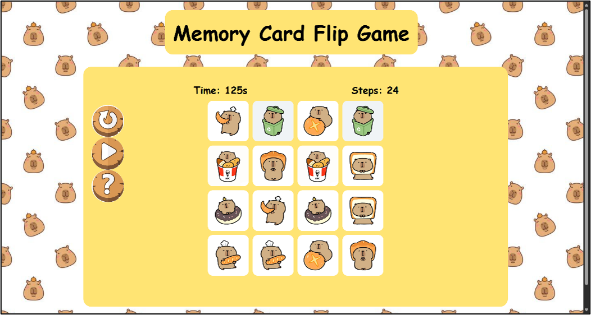
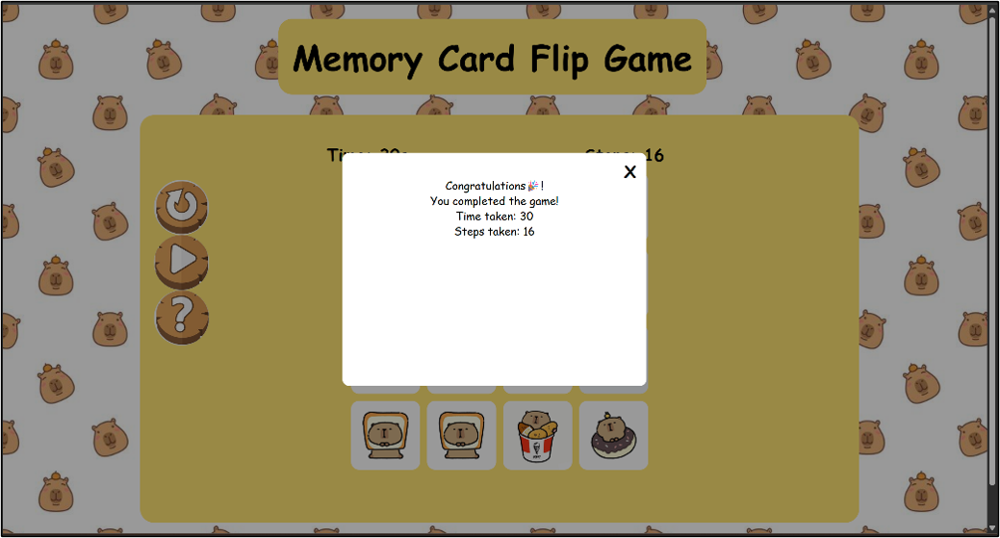
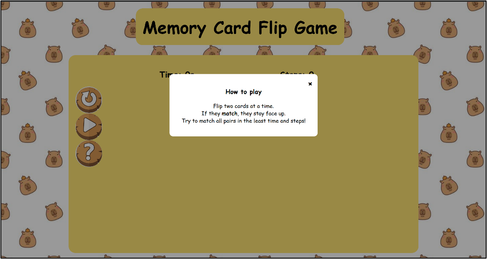
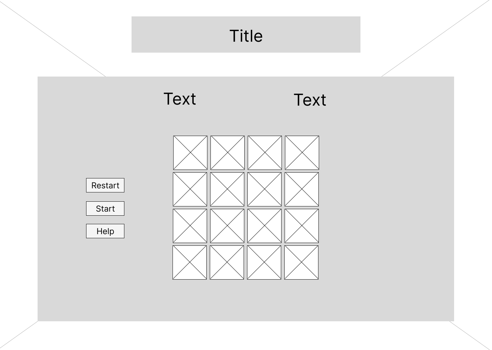
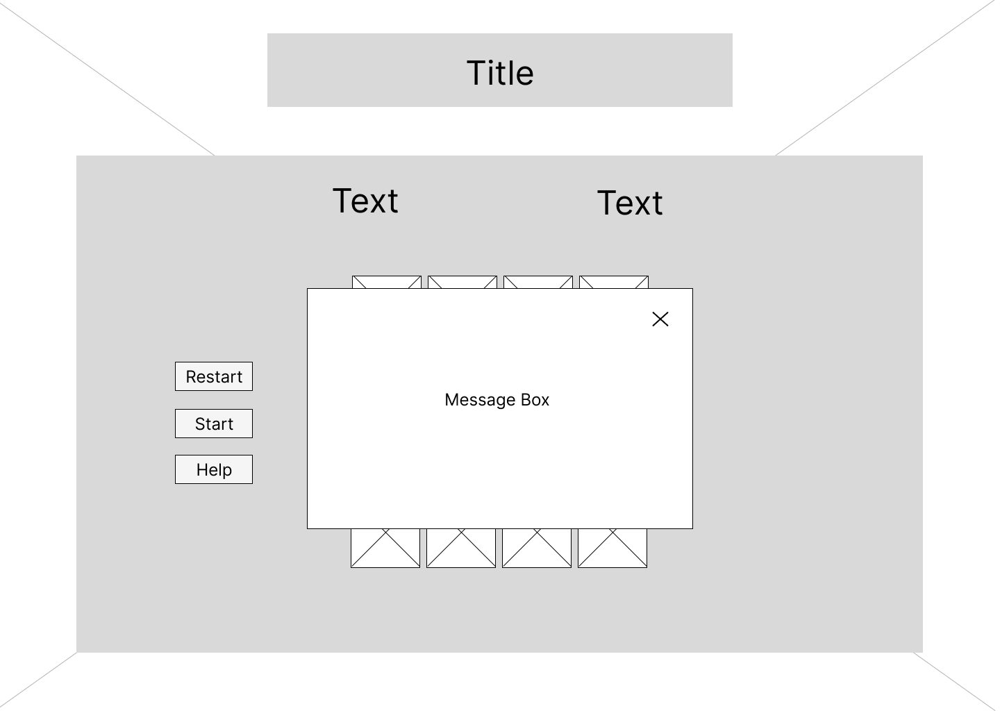

A simple memory matching game built with HTML, CSS and JavaScript. Players flip two cards at a time,
try to find matching pairs, and complete the game using as few steps and as little time as possible.
Game StartThe cards are face down and ready to match.

During GameplayFlip cards and remember where each picture appears.

Game CompletedA message displays the time and steps taken.

How to PlayFlip two cards at a time and try to match all pairs.
Select any screenshot to open it at a larger size.
About the Project
The Memory Card Flip Game is a browser-based game where players need to find matching pairs of pictures.
Players turn over two cards at a time to check if the pictures match. If they match, the cards remain revealed.
Otherwise, the cards are turned back over, and players can try again.
The game includes a timer to record the time taken, a step counter to track the number of moves, a restart
button to start a new game, a play button to begin the game, and a help button to display the game instructions.
When all pairs are matched, a completion message appears to show the total time and number of steps taken.
What I Learned
I learned how to use HTML to structure the game page and CSS to design the cards, buttons, and overall layout.
I also used JavaScript to handle card clicks, check whether two cards match, and control the game progress.
In addition, I practised using JavaScript to update the timer and step counter, restart the game, display the game
instructions, and show the completion message when all pairs were matched.
Design Wireframe
The wireframe shows the planned game layout and main controls.

Web InterfaceWireframe showing the memory game layout and card grid.

Message BoxWireframe showing the memory game message boxes.